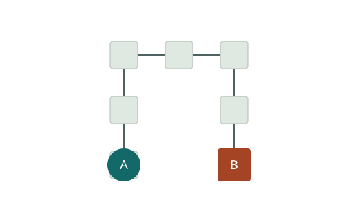

Memory → shape
On a tree support, recurrent tagged visits satisfy rv = Σ ke ≤ s. One state gives an edge; two give a path.
See the capacity law →Finite automata · induced square-grid mazes
Two identical agents follow the same finite-state rule in a grid maze. How does finite memory shape their eventual motion—and when can they stay apart forever?
They share a compass, observe open neighbours and move together at every integer time. Both start in state 0. Meeting means occupying the same or adjacent cells.

On a tree support, recurrent tagged visits satisfy rv = Σ ke ≤ s. One state gives an edge; two give a path.
See the capacity law →The exact two-state smallest-trap threshold is 7, also on induced grid trees.
Follow the low-state ladder →A complete selected family, with minimum size certified within these fixed 144 candidates.
Inspect every test →A 5212-cell induced tree traps every controller with at most two states. The bad starts may depend on the controller.
Explore the exact construction →The exact model · small editable instances
Inspect a synchronous execution one step at a time. Every nonempty mask requires a legal move. There is no waiting and no additional meeting event between integer times.
One integer x,y pair per line, up to 64 cells. All distance-one edges are included automatically. Applying an edit requires a connected maze. Starts are preserved where possible.
Each entry is (direction, next state). Only open compass directions can be selected. Editing resets both agents to state 0. Teal A and rust B mark the rows for their current integer-time tags.
From finite memory to recurrent geometry
Take the least-period tagged cycle and look only at the edges it actually traverses. If that support is a tree, each edge is crossed equally often in both directions.
This source-defined grid-star controller realizes degree min(s,4). Each edge has multiplicity 1 in each direction. The centre is visited in a different state for each leaf.
rv = Σe∋v ke ≤ s
L = 2 Σe ke
Δ(T) ≤ min(s, 4)
Every used edge has ke ≥ 1. Each departure consumes one recurrent tag over the vertex, and a primitive cycle cannot repeat the same cell/state tag.
A sharp bound at every state budget
Compute the maximum least tagged period for any integer state budget s ≥ 2 and fully used n-vertex path, n ≥ 2.
Maximum least tagged period
For n ≥ 3, the direction word is E N E N … . East edges have multiplicity s−1 and north edges have multiplicity 1, in either direction. A standalone edge uses the separate 2s construction.
Individual traps · controller chosen first
F(s) maximizes a controller’s smallest trap size over controllers with at most s states. The adversary then chooses a maze and two state-0 starts. This differs from choosing one universal host first.
| Memory | Maze class | Threshold | Proof basis |
|---|---|---|---|
| One state | Paths, one-junction trees, grid trees and all grid mazes | 4 | Deductive |
| Two states | All grid mazes; unchanged on induced grid trees | 7 | Deductive |
| Two states | Induced paths | 8 | Analytic upper + finite lower certificate |
| Three states | Induced paths | ? | Open |
| Four states | Induced paths | ∞ | Deductive · one fixed controller |
For every one-state controller in each of the four listed classes, the smallest trap is 2 when 0 ≤ ρ < 1, and ⌊ρ⌋+3 when ρ ≥ 1. Radius one gives F(1)=4.
Coincidence and adjacency are different success conditions: on a two-cell edge opposite starts exchange endpoints forever, but already satisfy radius-one contact at time 0.
Select the first open direction strictly after the stored compass direction in cyclic order N,E,S,W. Store the opposite of the selected direction as the next state.
This gives one contour cycle on a tree; phase contact gives rendezvous on a path. The rendezvous guarantee is for every finite induced path.
Try the exact controller →Geometry · compatibility · accessibility
The paper decides whether a prescribed recurrent contour-plus-matching cycle can be realized by a shared table. Universal three-state path rendezvous remains open.
On used path supports with at least three vertices, edge multiplicities are 1 or 2. Doubled edges form a matching. One contour passage of each doubled edge becomes forward–back–forward.
The insertion phase selects the increasing or decreasing passage. This geometric form alone does not make the repeated (state, mask) rows compatible.
Cells with the same absolute compass mask query the same controller rows. After the direction condition, one finite profile θ selects the role constants and successor differences.
Aθz = bθ over F2
Realization holds exactly when some one shared profile gives a consistent system. A profile that fails is not enough to reject the specification.
The fixed direction word is E N E N N N E, with doubled edges 0,2,6 and fixed insertion phase 0 on each. Here x and y are correspondence bits comparing ordered state pairs at equal masks.
The exact extendible relation is {00,01,10}. An affine two-bit projection has 1, 2 or 4 members, never 3. Eliminating the profile choices therefore need not leave one global XOR system.
The six-vertex E N E N E staircase doubles the two north edges, in phases 0 and 1. Its geometry passes the doubled-side condition, but its shared rows cannot be realized by three states.
The appendix derives this contradiction from the actual successor rows. The released finite enumeration also finds zero realizations. No smallest-obstruction claim is made here.
On the four-vertex E N E path, two exact completions preserve the contour cycle (0₂,1₁,2₁,3₁,2₂,1₂). In the good completion every state-0 start reaches it in one step. In the bad completion none does: state-0 starts remain on two separate edge cycles.
One proof-derived menu · absolute orientations retained
Each test fixes exact maze cells and two state-0 starts. The full family is deductively complete for every legal controller with at most two states.
For completeness, the released checker reconstructs the full physical transition functions, regenerates the escape CNF and checks the supplied RUP-style LRAT certificate. For the restricted lower bound, 44 explicit packing controllers have nonempty, pairwise-disjoint sets of trapped candidates. A complete subfamily must hit every such set.
The browser displays the exact candidate coordinates and set membership. It does not replay the proof certificate. The specialized verifier supports the supplied RUP format; it is not a general LRAT/RAT verifier.
Exact released construction · one host fixed first
There exists one induced subcubic grid tree U such that every legal controller with at most two states has an initially noncontacting state-0 start pair that avoids rendezvous forever.
∃ U ∀ A ∃ (xA, yA)
The host is fixed before the controller. The bad starts may depend on the controller. Every exact size n ≥ 5212 also admits such a universal induced grid tree.
Drag to pan; wheel or +/− to zoom. Arrow keys pan. Home fits the entire host. Click the overview to move along the long rail. On touch screens, drag and use the zoom buttons.
8 ≤ u2 ≤ u2,tree3 ≤ 5212
The construction proves an upper bound. Neither exact minimum is known. The individual-controller threshold F(2)=7 has a different quantifier order and does not make a seven-cell universal host.
Transparent checks · frozen inputs
The verified release records a complete reproducibility pass: all 15 mandatory stages and 30 regenerated deterministic files. The logical role of each computation stays distinct from the browser demonstration.
From research/, with a new or empty external output directory:
python3 supplement/common/integrity.py python3 supplement/verify_all.py --output /tmp/rendezvous-replay
Integrity checks bytes and inventory only. Full verification requires Python 3.10+ and a GCC-compatible C++17 compiler (g++ by default). It uses the Python standard library, needs no network or SAT solver, and prints PASS_FULL_REPRODUCIBILITY only after every required stage passes. Do not use Python −O.
python3 paper/build.py --output /tmp/rendezvous-paper --check-canonical
Run from research/. Requires pdfLaTeX, BibTeX8 (or BibTeX fallback), Latin Modern/AMS fonts and the standard packages listed in main.tex. Output stays outside the release. Canonical byte equality depends on the TeX/font toolchain; omitting --check-canonical permits a diagnostic build without claiming exact reproduction.
Exact release instructions ↗| Claim / chain | Logical role | Canonical artifacts |
|---|---|---|
| Capacity, sharp periods, F(1), F(2), four-state paths | Deductive proofs | Paper; proof-status appendix |
| Two-state path threshold 8 | Finite lower certificate + analytic upper | Two independent generators + product recurrence; 337 paths / 4042 far pairs through 7 |
| Selected 44 within 144 | Necessary finite certificate and packing | Physical-semantics checker; CNF; RUP/LRAT; packing witnesses |
| Universal-host lower bound 8 | Necessary finite certificate | All fixed geometries through 7 and eight A-star conjugates |
| 5212-cell placement | Exact finite validation of a human construction | Exact coordinates / 172 pieces; portability and graph checker |
| Three-state all-size criterion | Deductive iff theorem; finite scans validate implementation | Theorem; data conventions; witness checker |
Paper · authors · citation
Memory, Recurrent Geometry, and Rendezvous Traps in Induced Grid Mazes
Author order and affiliations follow the canonical metadata. A corresponding author, email and ORCIDs have not been supplied.
@unpublished{fofonov_antonchikov_rendezvous,
author = {Fofonov, Michael and Antonchikov, Artem},
title = {Memory, Recurrent Geometry, and Rendezvous Traps in Induced Grid Mazes},
note = {Manuscript}
}Code: MIT. New explanations and project data: CC BY 4.0. The copied manuscript/PDF/LaTeX/TikZ/bibliography retain author all-rights-reserved status; embedded font notices are preserved.
License notice and complete mapping ↗